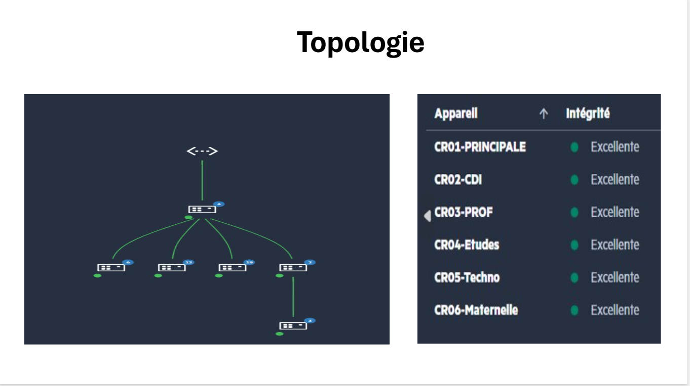

À Propos de Mon Profil
De la maintenance de proximité à la conception d'infrastructures réseaux complexes, mon parcours est guidé par une passion pour la résolution de problèmes et la sécurisation des systèmes d'information.
Mes Compétences Techniques
Réseau & Sécurité
Administration Système
Support & Outils
Exantis Informatique
Prestataire informatique spécialisé dans la gestion de parcs pour PME, établissements scolaires et associations en région PACA. Exantis est une SCOP (Société Coopérative et Participative) qui assure une prestation d'infogérance complète : support hotline N1/N2, maintenance sur site en régie, déploiement d'infrastructures réseaux et sécurité.

PRTG — Supervision temps réel
Parcours Pro
Alternant Technicien Informatique
Maintenance de parcs informatiques (SCOP). Gestion de tickets N1/N2, déploiement de serveurs, configuration de switches/firewalls et assistance utilisateur.
Stagiaire Technicien Support
Diagnostic et réparation hardware. Assistance de proximité pour les utilisateurs, masterisation de postes et configuration réseau basique.
Formation
BTS SIO (Option SISR)
Solutions d'Infrastructure, Systèmes et Réseaux. Apprentissage approfondi de l'administration réseau, Windows/Linux Server et cybersécurité.
Bac Pro SN (Option RISC)
Réseaux Informatiques et Systèmes Communicants. Bases de l'électronique, câblage, et configuration de switchs/routeurs.
Projets & Situations Professionnelles
Épreuve E4 - BTS SIO Option SISR
Aperçu — Tableau de Synthèse BTS SIO
Refonte LAN : 6 Commutateurs, VLANs & Management Cloud
Remplacement de 6 anciens switches par une architecture VLANs 802.1Q managée via portail Cloud pour l'école Saint-André. Segmentation complète des flux administration / pédagogie / gestion.

Infrastructure WiFi 6 : FortiAP + Contrôleur FortiGate
Déploiement de 8 bornes FortiAP (FAP-231G/234G) sur le site industriel LogiSud, pilotées via CAPWAP par un FortiGate FGT-80FPOE. Double SSID : WIFI-PRO (interne) + WIFI-GUEST (général).
Tableau de Synthèse des Réalisations
Missions complémentaires réalisées en formation et en entreprise — Session 2026.
Refonte LAN : Remplacement de 6 Commutateurs, Segmentation VLANs & Management Cloud
Situation : Nouveau client Exantis — l'école Saint-André souhaitait remplacer une infrastructure réseau vétuste et non-manageable par une architecture moderne, sécurisée et supervisable à distance.
1 Présentation de l'entreprise & Contexte
Mon alternance se déroule chez Exantis Informatique, une SCOP (Société Coopérative et Participative) basée à Avignon, spécialisée en infogérance pour les PME et établissements scolaires de la région PACA.
L'école Saint-André est un nouveau client d'Exantis, ayant changé de prestataire suite à une gestion désorganisée de l'ancien informaticien. Le réseau en place reposait sur des switches D-Link grand public non-manageables, ce qui rendait toute supervision ou segmentation impossible.

Atelier Exantis — Banc de test et préparation des équipements clients
2 Problématique Technique
Le problème principal résidait dans l'architecture « à plat » (réseau non segmenté). Tous les équipements — administration, classes pédagogiques et bornes Wi-Fi — cohabitaient sur le même plan d'adressage 192.168.1.0/24 sans isolation. Un élève pouvait techniquement accéder aux partages réseau de la direction.
Risques identifiés
- Accès non autorisé aux données de la direction (RGPD)
- Aucune supervision possible : pannes non détectées en temps réel
- Congestion réseau : diffusion des broadcasts sur tous les équipements
- Pas de gestion de l'alimentation
PoE(budget énergie non contrôlé)
Le cahier des charges établi avec le client exigeait : fiabilité maximale, gestion à distance, isolation des données direction, et évolutivité (ports PoE+ pour futures caméras/bornes).
3 Étude des Solutions & Choix Technique
| Solution envisagée | Gestion distante | VLANs | Coût | Verdict |
|---|---|---|---|---|
| Switches non-manageables | ✗ | ✗ | Faible | Rejeté |
| Switches CLI manageable | ~ | ✓ | Élevé | Complexité excessive |
| HPE Instant On 1930 (Cloud) | ✓ | ✓ | Moyen | ✓ Retenu |
La gamme HPE Networking Instant On 1930 offre le meilleur compromis : interface de gestion Cloud accessible depuis un navigateur, support natif des VLANs 802.1Q et des trunk inter-switches, et alimentation PoE+ intégrée (30W par port).
4 Conception : Architecture & Plan d'Adressage
L'établissement étant réparti sur plusieurs bâtiments, j'ai conçu une topologie en étoile étendue avec un switch cœur de réseau en baie principale. Chaque bâtiment dispose d'un switch de distribution connecté via un lien trunk 802.1Q transportant les 3 VLANs tagués.
10.0.10.0/2410.0.20.0/2410.0.30.0/24
Topologie Cloud HPE — 6 switches (CR01 à CR06), liaison trunk 802.1Q, statut "Excellente"

Plan d'adressage IP — Relais DHCP par VLAN
Topologie Cloud — 6 switches nommés, état "Excellente"
5 Déploiement & Configuration
Pour minimiser l'interruption, j'ai réalisé la pré-configuration des 6 switches en laboratoire sur le portail HPE Instant On avant l'intervention sur site. Le déploiement physique a été réalisé en dehors des heures de cours.
// Logique de configuration par port
Port uplink (inter-switch) → mode trunk — VLANs 10,20,30 tagués
Port serveur / imprimante → mode access VLAN 20
Port salle de classe → mode access VLAN 30
Port borne Wi-Fi (PoE+) → mode trunk — VLANs 20,30
Une contrainte énergétique supplémentaire a été adressée : les ports PoE+ alimentant les équipements pédagogiques sont configurés avec une plage horaire de coupure automatique la nuit (22h–6h), réduisant la consommation électrique hors présence.

Pré-configuration des switches en atelier — avant déploiement sur site

Affectation horaire PoE+ — Coupure automatique nocturne
6 Supervision Cloud & Résultats
Le portail HPE Instant On génère une cartographie dynamique de tous les switches avec l'état de santé de chaque équipement. Des alertes sont automatiquement envoyées (email) si un switch se déconnecte, avec indication de la cause probable (link down, perte d'alimentation, etc.).
Supervision Cloud HPE — CR01 à CR06 · Intégrité "Excellente" sur les 6 switches

Alerte automatique : switch hors ligne, causes probables et temps de résolution
7 Difficultés Rencontrées & Bilan
Principale difficulté
L'absence totale de plan de brassage existant a nécessité un audit physique complet : utilisation d'un testeur de câble pour identifier chaque connexion et reconstituer la cartographie des ports avant d'affecter les VLANs.
Ce projet a pleinement validé le cahier des charges : réseau fiable, sécurisé et supervisable à distance. Il m'a permis de mettre en pratique des concepts fondamentaux du SISR — trunking 802.1Q, segmentation par VLAN, gestion PoE — sur une infrastructure de production réelle, dans un délai contraint de 3 jours.
/Map%20borne.png)
Infrastructure WiFi Industrielle : FortiAP WiFi 6 & Contrôleur FortiGate
Situation : Ouverture du site industriel LogiSud (entrepôt logistique), sans aucune infrastructure réseau. Mission : déployer une couverture WiFi 6 complète avec double réseau, piloté entièrement depuis le FortiGate.
1 Contexte & Présentation du Site
Le client LogiSud inaugure son nouveau site logistique : un entrepôt industriel couvrant plusieurs zones — quai de chargement, vestiaires, salles de travail (SEC E/F/K/M/X), zone froide (FRAIS J), espace compresseurs. Le bâtiment est totalement vierge de connectivité.
Exantis Informatique est mandaté pour le déploiement complet. La contrainte clé : toute la gestion WiFi doit être centralisée sur le pare-feu déjà livré, le FortiGate FGT-80FPOE, évitant tout équipement de contrôle supplémentaire.
Plan de masse — Emplacement des bornes FortiAP sur le site LogiSud
2 Problématique Technique
Un environnement industriel pose des contraintes radio spécifiques : structures métalliques (rayonnages, portiques), hauteur de plafond importante, zones longues et étroites. Il faut simultanément garantir la couverture et la séparation stricte des flux entre deux populations d'utilisateurs.
Contraintes identifiées
- Atténuation radio forte : matériaux métalliques, surface > 2 000 m²
- Double population : personnel interne (
WIFI-PRO) et réseau général (WIFI-GUEST) - Alimentation bornes : pas de prises secteur disponibles → nécessite
PoE+ - Gestion individuelle des bornes inacceptable à l'échelle du site
3 Solution Retenue : FortiAP + FortiGate Controller
La solution s'appuie sur l'intégration native FortiAP + FortiOS. Le FortiGate intègre nativement un module FortiAP Manager : il joue à la fois le rôle de pare-feu et de contrôleur WiFi — un seul équipement, une seule interface.
Architecture "thin AP" : les bornes FortiAP n'ont aucune intelligence propre. Toute la configuration (SSIDs, sécurité, VLAN, firmware) est poussée depuis le FortiGate via le protocole CAPWAP.
4 Conception : Double SSID & Plan Radio
Chaque borne FortiAP diffuse les 2 SSIDs simultanément sur les radios R1 (2.4 GHz) et R2 (5 GHz). La radio R3 (6 GHz) est réservée aux futurs usages en mode tunnel.
WIFI-PROWPA210.83.x.x/24WIFI-GUESTWPA210.83.2.x/24/Liste%20wifi.png)
Les 2 WiFi SSIDs déclarés sur FortiGate : WIFI-PRO & WIFI-GUEST
5 Configuration FortiAP sur FortiGate (FortiOS)
Deux profils FortiAP ont été créés dans FortiOS → WiFi & Switch Controller → FortiAP Profiles, un par modèle de borne. Chaque profil définit les bandes radio actives et les SSIDs assignés :
// FortiAP Profiles — FortiGate FGT-80FPOE-CLIENT-B-SITE
Profil FAP231G-ROUBY (modèle FAP-231G)
R1 : 2.4 GHz 802.11ax/n/g → WIFI-PRO + WIFI-GUEST
R2 : 5 GHz 802.11ax/ac/n/a → WIFI-PRO + WIFI-GUEST
R3 : 6 GHz 802.11ax → All Tunnel Mode SSIDs
Profil FAP234G-ROUBY (modèle FAP-234G)
R1/R2 : idem FAP231G — R3 : Dedicated Monitor
// Autorisation des bornes (Managed FortiAPs → Authorize)
Firmware poussé automatiquement : FP231G-v7.4-build0713
/Interface.png)
Profils FortiAP — Tri-band + SSIDs assignés par radio
/Config%20borne.png)
Borne "Quai Chargement" — Firmware, radios & statut Connected
Installation physique sur site — Poses des bornes FortiAP
/photo%20installations/M%C3%A9dia%20(1).jpg)
Fixation plafond
/photo%20installations/M%C3%A9dia%20(5).jpg)
Câblage RJ45 PoE+
/photo%20installations/M%C3%A9dia%20(10).jpg)
Zone entrepôt SEC
/photo%20installations/M%C3%A9dia%20(15).jpg)
Couloir vestiaire
Cliquer sur une photo pour l'agrandir
6 Dashboard FortiGate — Supervision Centralisée
Le FortiGate affiche en temps réel l'état de toutes les bornes (Online / Offline), l'utilisation des canaux radio, le nombre de clients connectés et la version de firmware. La supervision est accessible via l'interface HTTPS du FortiGate depuis n'importe où.
/Liste%20Borne.png)
Dashboard FortiGate — Bornes Online, utilisation canaux radio
/Liste%20borne%202.png)
Bornes SEC E/F/K/M — Firmware unifié, statut Online
7 Tests de Validation & Bilan
Des tests de connexion ont été effectués depuis plusieurs zones du bâtiment (quai, vestiaires, salles SEC). Les niveaux de signal mesurés sont compris entre -64 et -67 dBm, conformes aux standards industriels (seuil critique : -70 dBm).
/Appareil%20connecter.png)
Appareils connectés au SSID WIFI-GUEST — Signal -64 à -67 dBm, Canal 153
Tests réussis
- Couverture homogène sur toutes les zones du site ✓
- Signal
-64 à -67 dBmsur tous les points de test ✓ - Toutes les bornes
Onlineet firmware unifié ✓ - Gestion centralisée depuis FortiGate opérationnelle ✓
Compétences mobilisées
- Protocole
CAPWAP(contrôle FortiAP) - Profils FortiAP multi-bandes (WiFi 6 tri-band)
- Étude radio en environnement industriel
- FortiGate comme point de contrôle unique (pare-feu + WiFi)
Ce projet valide ma maîtrise de l'écosystème Fortinet dans sa dimension WiFi : configuration de profils FortiAP, gestion centralisée via FortiOS, et déploiement en conditions industrielles réelles. L'architecture est robuste, évolutive et cohérente avec le pare-feu existant.
L'évolution de la Cybersécurité dans les réseaux
Dans un contexte où les attaques se multiplient, ma veille technologique se concentre sur la sécurisation des architectures et les nouvelles normes de protection.
Méthodologie & Outils de Veille
1. Ciblage & Thème
Je me concentre sur les vulnérabilités réseaux (LAN/WLAN), les failles matérielles (Fortinet, Cisco) et les normes européennes (NIS 2).
2. Outils de Collecte
J'utilise des agrégateurs de flux RSS (Feedly, Inoreader) et des alertes par mots-clés Google pour centraliser l'information automatiquement.
3. Traitement & Sources
Tri hebdomadaire des alertes officielles (CERT-FR, ANSSI), des blogs spécialisés (IT-Connect) et des forums (Reddit r/sysadmin).
Actualités IT (Flux en direct)
Sources : CERT-FR, IT-Connect, Le Monde InformatiqueRécupération des derniers articles en cours...
Impact sur ma pratique professionnelle
Cette veille technologique n'est pas que théorique, elle influence directement mon travail de technicien chez Exantis. La lecture régulière du CERT-FR et d'IT-Connect me pousse à systématiser la mise à jour des firmwares (Fortinet, HPE) chez nos clients. Je me sers également de cette actualité pour sensibiliser les entreprises à l'importance de segmenter leurs réseaux (VLANs) face aux nouvelles menaces.